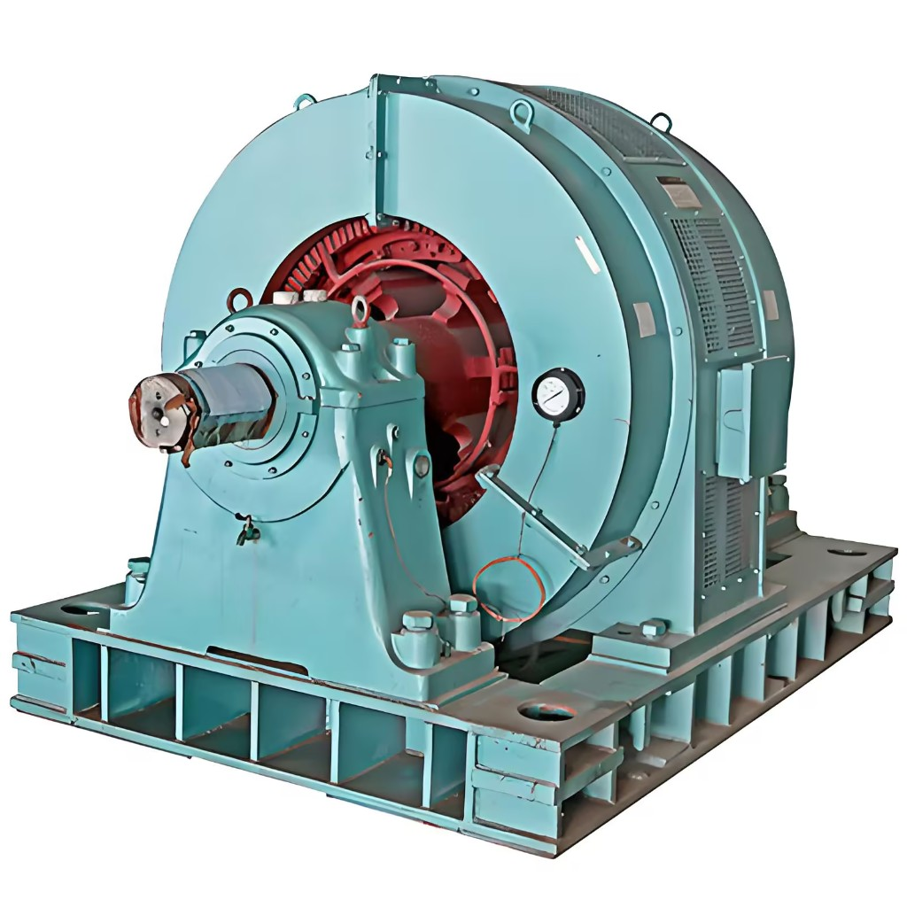

TKK系列同步电机
TKK系列同步电机，专为冶金、矿山、石化、电力及大型工业装备设计，具备高效率、高精度和稳定运行性能。该系列电机采用同步转子结构设计，确保在重载和长时间连续运行工况下输出稳定动力，满足工业设备对高可靠性和高性能的要求。
整机结构紧凑坚固，优化绝缘系统和高寿命轴承可承受频繁启停及重载工况。支持多种额定功率、转速、冷却方式及安装形式定制，适配不同工业系统需求。
同步电机设计，运行稳定、效率高
高功率密度输出，适应重载连续运行
支持多种安装形式、转速和冷却方式
优化绝缘系统与高寿命轴承，降低维护成本
适用于冶金、矿山、石化及电力设备
广泛应用于：冶金轧机、矿山破碎设备、石化泵与压缩机、发电机组及其他高功率工业装备。
一、产品概述与技术特点
1. 产品简介
TKK系列同步电机是西玛电机针对重型工业应用环境研发的大型动力设备，其精密的电磁设计与优化的冷却系统确保了在严苛环境下的稳定运行。作为工业领域的核心动力源，该系列电机严格遵循JB/T 8667.1-2011《大型三相同步电动机技术条件》 等国家标准，保证了产品的可靠性与兼容性。
TKK系列电机采用模块化设计理念，允许根据不同的应用需求进行灵活配置。电机的箱式结构与卧式安装设计使其能够适应多种工业环境，而座式滑动轴承的使用则确保了设备在长期连续运行条件下的可靠性。
2. 型号说明
西玛电机TKK系列型号遵循统一的命名规则，以"TKK1600-4/1430"为例：
"T"：代表同步电机
"KK"：表示空-空冷却器
"1600"：表示电机功率为1600KW
"4"：表示电机极数
"1430"：定子铁心外径为1430mm
这一清晰的命名体系使客户能够快速识别电机的基本参数和特性，便于选型与配套。
3. 核心技术特点
TKK系列同步电机融合了多项创新技术，具有显著的性能优势：
优化的冷却系统：采用空-空冷却器（KK） ，有效控制电机运行温度，确保在高温环境下仍保持稳定性能
强大的绝缘系统：定子绕组采用F级绝缘结构，温升按B级考核，提供充分的温升裕度，有效延长绝缘寿命
卓越的启动性能：电机允许全电压直接启动，若用户电网容量不足，也可采用降压启动或软启动方式
灵活的供电适应性：额定电压通常为6kV，也可根据用户需求提供10kV规格，允许电压偏差范围为±5%
二、技术参数与性能指标
TKK系列同步电机覆盖了广泛的技术规格，满足不同工业场景的动力需求。以下是该系列电机的主要技术参数：
| 参数类别 | 技术规格与性能指标 |
|---|---|
| 额定功率 | 400kW～4000kW（可根据需求定制） |
| 额定电压 | 6kV、10kV（也可提供3kV） |
| 额定频率 | 50Hz |
| 极数范围 | 4极、10P、12P、14P、16P、18P、20P、24P等 |
| 额定功率因数 | 0.9（超前） |
| 外壳防护等级 | IP54（可定制其他等级） |
| 冷却方式 | 强制风冷，IC01、IC37等（可根据需求定制） |
| 绝缘等级 | F级 |
| 工作制 | S1（连续工作制） |
| 安装方式 | 卧式安装，IM7311、IM5710等 |
除了上述基本参数外，TKK系列同步电机在低振动、低噪声方面也有出色表现，这得益于西玛电机精密的动平衡校正与优化的结构设计。电机的旋转部件加工精度高，能保证定转子同心度，从而减少运行时的振动和噪音。
三、结构设计与配置
1. 电机主体结构
TKK系列同步电机采用坚固的箱式结构，每个部件都经过精心设计和优化：
机座设计：采用优质钢板焊接而成，具有足够的强度和刚度。电机部件设计均经过有限元建模分析，确保良好的动态性能
定子结构：定子铁心采用0.5mm厚的低损耗硅钢片叠压而成，铁心段间以径向通风道隔开，有效改善散热条件
转子设计：转子采用特殊阻尼结构，提高阻尼减小振荡。专用旋转体零部件防松动技术，确保紧固，避免火花和电弧
2. 轴承与润滑系统
TKK系列同步电机配备高性能座式滑动轴承，具有可靠的润滑系统和温升控制：
轴承结构：一般采用油环式结构或复合润滑结构，根据具体结构和负荷而定
防轴电流设计：座式轴承安装在底板上，中间有绝缘垫板，有效防止轴电流的产生，保护轴承免受电蚀
3. 励磁系统
TKK系列同步电机采用先进的励磁技术，确保电机稳定运行：
可控硅励磁装置：提供稳定的直流励磁电源，保证电机在不同负载条件下的运行性能
无刷励磁系统（可选）：交流励磁机及旋转整流装置采用独立式结构，易于检修维护
四、应用领域与场景
TKK系列同步电机凭借其可靠的性能和坚固的结构，在众多工业领域得到了广泛应用：
1. 主要应用行业
石油化工行业：用于驱动压缩机、泵类设备，适应无酸、碱等腐蚀性气体的环境要求
电力行业：应用于发电厂辅机设备、水泵系统等，提供稳定的动力支持
矿山行业：专门用于传动矿山磨机，包括格子型球磨机、棒磨机、磨煤机等
2. 典型应用场景
TKK系列同步电机主要适用于以下设备驱动：
压缩机设备：特别是往复式空气压缩机，电机具有转矩大、转速恒定的特点，即使在负载变化剧烈时，依然能够保持恒定的同步转速
泵类设备：用于驱动各类工业水泵、循环水泵等，满足连续运行的需求
风机设备：适用于通风机、引风机等设备，提供可靠的动力支持
五、产品优势与价值
1. 高效节能特性
TKK系列同步电机具有显著的节能效果：
高功率因数：额定功率因数达到0.9（超前），有效改善电网质量，减少无功补偿设备投资
低损耗设计：采用低损耗硅钢片和合理的电磁参数，显著降低铁损和铜损，提高运行效率
2. 运行可靠性
TKK系列同步电机在可靠性方面具有明显优势：
强大的启动能力：具有较高的堵转转矩和牵入转矩，确保设备顺利启动
良好的过热裕度：绝缘系统按B级考核，实际采用F级或更高绝缘材料，提供充分的温升裕度
卓越的防潮性能：采用真空压力浸渍工艺，绕组具有优异的防潮能力和机械强度
3. 维护便利性
该系列电机在设计上充分考虑了维护的便利性：
易于检修的结构：合理的结构设计使日常检查、维护和检修工作更为便捷
模块化组件：关键部件采用模块化设计，降低备件库存和更换难度
完善的监控接口：可根据用户需求，在定子绕组、轴承等重要部位加装测温装置，以便实时监测电机运行状态
六、安装与使用指南
1. 安装条件要求
TKK系列同步电机对安装环境有明确要求：
环境条件：适用于海拔不超过1000米，环境温度不超过40℃，少尘埃、无蒸汽、酸、碱等腐蚀性气体的室内环境
基础要求：需要坚固平整的基础，能够承受电机的重量和运行时的机械应力
对接要求：电动机和被驱动机械采用联轴器连接时，电动机轴伸上不能承受外加的径向力或轴向力
2. 电气连接与配置
正确的电气连接是电机可靠运行的前提：
定子引出线：有多个出线头，采用高压电缆线在机座下部出线夹上引出，也可按要求制成接线盒接线
励磁系统：采用可控硅励磁装置，提供稳定的直流励磁电源
保护配置：应根据电机容量和系统要求配置适当的保护装置，包括过流、过载、欠压等保护
七、服务与技术支持
1. 质量保证体系
西玛电机建立了完善的质量保证体系，确保TKK系列同步电机的卓越品质：
国际标准认证：通过ISO9001质量体系认证、ISO14000环境管理体系和OHSAS18000职业健康安全管理体系认证
严格的检测流程：在制造过程中经过多次匝间脉冲耐压及对地耐压试验，确保绝缘性能优良可靠
全面的性能测试：每台电机都经过严格的出厂测试，包括空载试验、负载试验和超速试验
2. 售后服务承诺
西玛电机为客户提供全面的售后服务保障：
快速响应：客户在使用过程中如发现质量问题，在接到通知后24小时内答复，需现场服务的48小时内启动
专业支持：故障不排除维修人员不撤离，确保设备恢复正常运行
终身服务：西玛电机产品一经出售终身成本费保修，为客户提供长期技术支持
上一个：ZTP系列铁路机车辅助直流电机下一个：YVFE3系列超高效变频调速电机